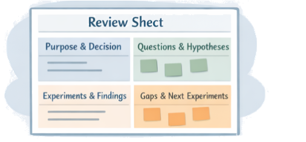
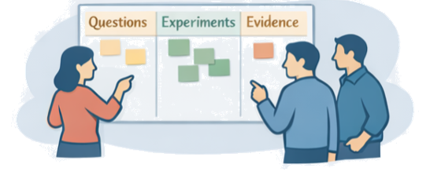
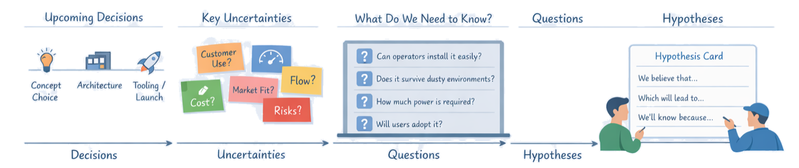
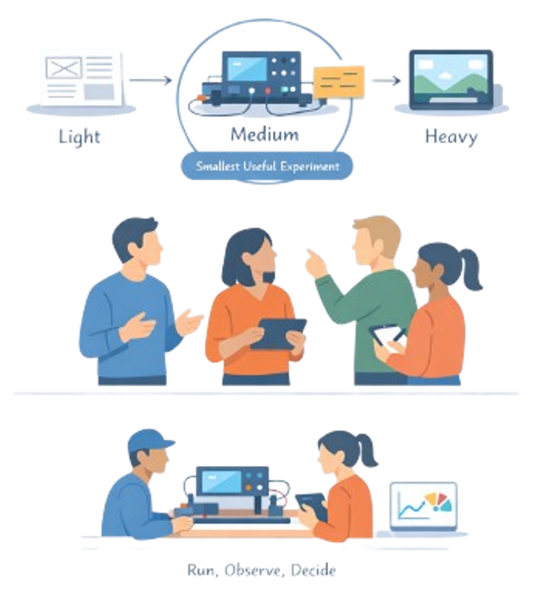
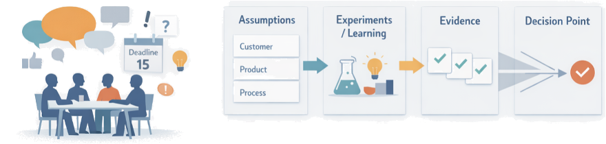
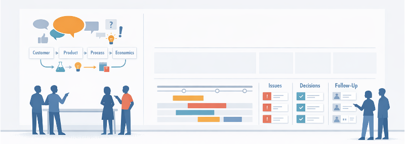
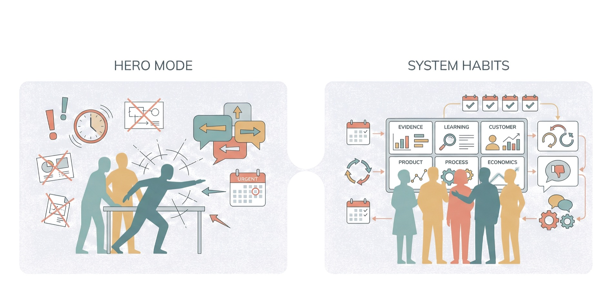

Chapter 7
How Teams Steer Designs Over Time
How would this initiative look if every major decision were explicitly tied to experiments and evidence?
Earlier chapters focused on choosing where to play, understanding problems and context, and designing products, processes, and value streams that can flow. Chapter 7 turns to how you steer those designs over time: how teams validate what they are doing, learn fast enough, and make decisions that are truly grounded in knowledge rather than in hope or habit.
In LPPD, validation is not a late “test” step or a ceremonial gate review; it is a continuous, experiment-driven conversation between questions, evidence, and decisions. Learning becomes a deliberate system of cycles and knowledge reviews, and milestones become decision points defined by what must be known, not by which slide deck is due.
Section 7.1
From Output Reviews to Knowledge Reviews
In many organizations, “project reviews” still mean slide decks, traffic lights, and defending percent complete. These meetings check whether documents exist, not whether the team actually knows what it needs to know. LPPD reframes reviews as structured conversations about problems, uncertainties, experiments, and evidence.
What Is Being Reviewed?

A knowledge review starts from a different question: “What do we need to decide, and what must we know to decide it well?”
Instead of walking through functional status reports, the team looks at the key questions and uncertainties for this phase, the experiments and analyses completed and planned, and the evidence on the table. Success is not a green status; it is increased clarity about the product, the value stream, and the risks that still need work.
Anatomy of a Knowledge Review

Roles in the Review
Bring concise evidence, articulate uncertainties, and propose next experiments — rather than selling a predetermined answer
Pull for knowledge: “Show me what you learned” and “What still worries you?” — protect time for experiments instead of demanding premature commitments
Manufacturing, suppliers, service, and sometimes customers enrich the discussion with different perspectives on risk and feasibility
Section 7.2
Structuring Validation: From Questions to Experiments
Validation becomes powerful when it is designed, not improvised. LPPD teams move in a deliberate chain: map uncertainties, frame sharp questions, translate them into hypotheses, then choose the lightest experiments that can generate a clear signal for a decision.
Start from Uncertainties and Decisions
Good validation starts by asking: “What decision are we trying to make, and what could make it wrong?” Instead of starting from available test rigs or lab time, teams list the critical uncertainties that could break the product, the value stream, or the business.
From Questions to Hypotheses
Once key uncertainties are clear, the team turns them into questions and hypotheses that can be tested. Vague worries become focused statements that suggest specific experiments.

Examples of sharp hypotheses:
- “We believe operators can install this module in under 10 minutes the first time, with no special tools.”
- “We believe changing the cooling layout will reduce peak temperature by at least 8°C under continuous duty.”
Designing the Smallest Useful Experiment
With hypotheses in hand, design the smallest experiment that can disprove or strengthen them — not the most impressive one. Choose a rung on the prototyping ladder and a learning cycle length that matches the risk and the decision timing.

- Ask first: What is the lightest way to get a trustworthy signal? (paper mock, simulation, rig, field trial…)
- Isolate the variable as much as practical and define in advance what counts as success, failure, or “needs more study”
- Time-box the effort and plan how results will be reviewed and turned into a decision, so learning does not die in a slide deck
Section 7.3
Learning as a Deliberate System
Most organizations treat learning as a by-product of projects: if something is discovered, it lives in a slide deck, a folder, or a few people’s heads. LPPD instead treats learning as a designed system that runs through every project and value stream, with clear rhythms, roles, and places where knowledge is created, used, and reused.

From Accidental to Designed Learning
Rhythms, Roles, and Places for Learning
Time-boxed learning cycles, regular knowledge reviews, and fixed obeya/learning-wall meetings where questions, experiments, and decisions are updated
Clear ownership for questions (who reduces a given uncertainty), experiments (who designs and runs them), and integration (who turns results into shared knowledge)
Visible, shared spaces — physical or digital — where experiment status, findings, and design rules are posted and kept current, not hidden in personal folders
Building in Knowledge Reuse
A deliberate learning system is not only about creating new knowledge; it is about making it easy to find and reuse. Otherwise, each new project becomes a fresh PhD in the same topics.
- Curate a lightweight knowledge base organized around problems, decisions, and design rules rather than around projects (e.g., “dust protection”, “operator ergonomics”, “high-temperature plastics”)
- Require teams to link new experiments to existing knowledge (“What did we learn last time about this?”) before launching new tests
- Periodically review and prune the knowledge base so that the most robust, field-proven learning becomes the default starting point for future concepts and architectures
Section 7.4
Making Decisions Knowledge-Based
Choices made as late as necessary but as early as possible, grounded in explicit learning about customers, product, process, and economics.

What Makes a Decision “Knowledge-Based”?
A decision is knowledge-based when the team can clearly explain what they know, how they know it, and what remains uncertain at the moment of commitment. Instead of “we think it will work,” the conversation sounds like “here are the experiments we ran, what they showed, and the risks that are still open.”
- A defined decision frame: the question, options, constraints, and success criteria
- A short list of critical assumptions and how each has been tested (or not yet tested)
- Explicit trade-off views (performance vs. cost vs. lead time) rather than single-point estimates
Simple Decision Patterns and Records
Proceed as planned — knowledge is sufficient for this commitment
Stop — evidence shows the path is not viable
Change direction — learning points to a better option
Invest in more learning before committing — uncertainty is still too high
Capture reasoning in Decision A3s: one-page summaries stating the problem, options considered, evidence, trade-offs, decision taken, and follow-up learning tasks. Over time, these become an asset — new teams can see how earlier choices were made and avoid repeating old mistakes.
Delay Commitments, Front-Load Knowledge
- Use set-based thinking to carry multiple promising options while experiments eliminate weak ones, instead of converging too quickly on a single favourite
- Plan learning cycles so that the most impactful uncertainties are addressed before big commitments like tooling, platform freezes, or supplier lock-ins
- Treat milestones as “knowledge gates” rather than checklist gates: no green light unless defined knowledge conditions have been met or consciously waived
Section 7.5
Visual Management for Validation and Learning
Visual management is how validation and learning become visible, shared, and actionable instead of living in scattered files and private spreadsheets. Obeya rooms, learning walls, and simple boards make questions, experiments, and decisions easy to see at a glance so that cross-functional teams can coordinate, spot gaps, and act quickly.

Obeya as a Learning Hub
- Dedicate specific boards to learning flows (questions → experiments → evidence → decisions), separate from general task and schedule boards
- Establish a regular cadence (e.g., weekly learning meeting) where cross-functional representatives walk the boards, update status, and agree on next experiments
- Keep boards simple enough to update in the meeting itself; if the wall is always out of date, it stops being trusted and used
Making the Right Things Visible
Traditional project boards show schedules and task status but hide what actually matters: uncertainties, experiments, and knowledge. A good learning-focused wall passes this test: someone walking in cold should be able to answer “What are they trying to learn now, and what decisions are coming next?” within a minute.
Key things the team still needs to learn, tied to upcoming milestones
Who is running what, where, and when results are due — with status icons (planned / running / complete / blocked)
Simple decision records, design rules, and links to past learnings — with clear Go / No Go / Pivot / Deepen outcomes
Section 7.6
Behaviors and Culture for Better Decisions
Processes and tools for validation only work if everyday behavior supports speaking up, experimenting, and deciding based on evidence rather than on rank or fear. LPPD leans heavily on lean leadership habits: go and see, ask why, show respect, and develop people as problem solvers in a psychologically safe environment.

Leader Behaviors that Enable Learning
Spend time where work and experiments happen, asking questions and looking at real conditions instead of only reviewing slides
“What did we learn? What surprised us? What still worries you?” instead of “Are we on track?”
Make it explicit that thoughtful failures in experiments are acceptable — even expected — as long as learning is captured
Developing Problem Solvers, Not Heroes
A knowledge-based development system depends on many people able to run small scientific cycles, not a few experts parachuting in for crises. The cultural shift is from celebrating individual heroics to developing everyone’s capability to frame problems, design experiments, and interpret results.
- Teach and coach A3/LAMDA as the default way to tackle issues, so experiments and learning cycles feel routine
- Use reviews and obeya walks as coaching opportunities: leaders ask how teams framed the question, why they chose this experiment, and what they learned
- Recognize and celebrate good learning, not just good outcomes: highlight experiments that invalidated risky assumptions early and saved downstream pain
Psychological Safety and Speaking Up
Without psychological safety, people hide doubts, soften bad news, and avoid experiments that might fail in public. High-performing LPPD teams deliberately cultivate a culture where questioning assumptions and admitting “I don’t know” are normal.
- Problems are framed as process issues, not personal failures, and tackled together at the gemba
- Everyone is invited to challenge assumptions and data in reviews, provided they do so with respect
- Leaders respond to bad news with curiosity, not blame: “show me” and “let’s understand” — especially when experiments disconfirm a favored idea
Section 7.7
Practical Start: Upgrading Your Next Review
The fastest way to shift toward knowledge-based development is not a big reorganization; it is to run the very next project review differently. By changing one meeting at a time — from status reporting to evidence-based learning and decisions — you begin to rewire how people think and behave around projects.

Redesign the Agenda Around Decisions and Learning
Instead of walking through slide decks by function, build the agenda around decisions and what must be learned to make them.
- Ask each team to state the decision(s) they want from the review and the date by which it is needed
- Have them prepare one page listing: key questions, main assumptions, experiments done, and what the evidence currently says
- In the meeting, work decision by decision: “What are we deciding? What have we learned? What remains unknown, and what will we do about it?”
Use a Simple Decision & Learning Board
Upcoming Decisions
Each card with a decision name, owner, and due date
Knowledge Gaps
Key questions and assumptions blocking each decision
Experiments & Tasks
Current work to close those gaps — owner, status, due date
Decisions Made
Short summaries with outcome (Go / No Go / Pivot / Deepen) and link to decision record
Update this board live during the review so that, when you end, everyone sees which decisions moved, which are blocked, and why.
Leave with Clear Next Experiments, Not Just Actions
Traditional reviews end with long action lists; upgraded reviews end with a small set of sharp learning tasks and decisions. Before closing, ask for each major topic:
- What decision did we make, if any?
- If we did not decide, what must we learn next, and by when, to make that decision?
- What is the smallest experiment or analysis that will give us that knowledge, and who owns it?
At the next review, start by checking what was learned versus what was expected. This simple loop — decisions, questions, experiments, learning — turns project reviews into the engine of a knowledge-based development system.